How to read this page
The aliens are numbered 1 to 20. Each step is meant to be a little stranger than the one before, in body, in mind, or in what a society is. The first could be mistaken for us. The last exists only as a signal. The order is a judgement, not a measurement, and several neighbours could change places.
They are taken from science fiction that tries to be consistent with what is known, or at least with itself. Each card says what they are like, how they think and how they live, and ends with what the message of this project would be for them. That last line is the reason for the page: a message that explains itself still assumes a reader who has sentences, individuals, choices and a shared clock. Most of these readers lack at least one of them.
Other bodies, familiar minds
They look different, some of them very different, but a human could share a meal with them and follow the conversation. Their motives are ours: curiosity, pride, fear, profit.
1. Vulcans
Star Trek (television, from 1966)
- Body
- Human in almost everything: pointed ears, slanted eyebrows, green copper-based blood. They can have children with humans.
- Mind
- Human emotions, stronger than ours, held down by a lifelong discipline of logic. A touch telepathy, the mind meld.
- Society
- One home world, clans, a founding philosopher, a long peace after a violent past. Scientists and diplomats.
- Our message
- They would read it as it is meant, and probably approve of an argument that is proved and not merely claimed.
Image: Leonard Nimoy as Spock, NBC publicity photograph, 1967. Public domain. Source: Wikimedia Commons.
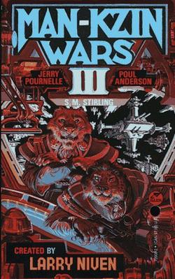
2. Kzinti
Larry Niven, Known Space stories (from 1966) and Ringworld (1970)
- Body
- Large orange cat-like carnivores, taller and far stronger than a human, with a naked tail and ears like small umbrellas.
- Mind
- As intelligent as humans and easy to follow: pride, honour, impatience. Their habit is to attack before they are ready.
- Society
- An empire of male warriors ranked by name and deed. They lost several wars to humans, which bred some caution into them.
- Our message
- They would understand every sentence, and learn the lesson of the game the hard way: by playing always-defect first.
Image: Cover of the anthology Man-Kzin Wars III. Reproduced small, as a quotation. Source: Wikipedia.
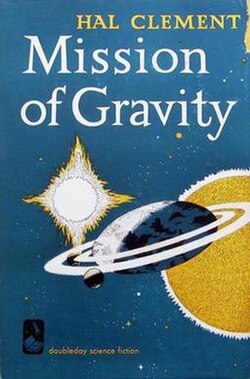
3. Mesklinites
Hal Clement, Mission of Gravity (1953)
- Body
- Armoured, many-legged crawlers the length of a forearm, built for a world of methane seas where gravity is three times ours at the equator and hundreds of times ours at the poles. A fall of a hand's width can kill, so they fear heights and anything overhead.
- Mind
- Curious, shrewd, brave within their fears. In temperament they are human sailors and traders.
- Society
- Merchant crews on rafts. Their captain helps the humans and bargains hard for what he really wants: their science.
- Our message
- They would read it, and then ask what we offer in exchange for a reply.
Image: Cover of the first edition of Mission of Gravity. Reproduced small, as a quotation. Source: Wikipedia.
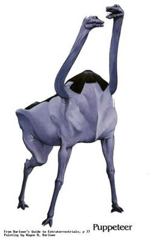
4. Pierson's Puppeteers
Larry Niven, Neutron Star (1966) and Ringworld (1970)
- Body
- Three legs, and two long necks that end in small heads serving as both mouths and hands. The brain sits in the body, under a hump.
- Mind
- Herd animals for whom caution is sanity and courage a mental illness. Brilliant, patient manipulators of other species.
- Society
- A hidden world of a trillion, moving their home world and its farm worlds, the Fleet of Worlds, out of the galaxy to avoid a danger twenty thousand years away.
- Our message
- They would understand it completely and trust none of it. For them the safe reply is no reply, and a quiet effort to make us harmless.
Image: Painting by Wayne Douglas Barlowe, from Barlowe's Guide to Extraterrestrials. Reproduced small, as a quotation. Source: Wikipedia.
Other biology, other drives
Still individuals, or nearly, and still recognisably people. But something in how they live, breed or think pushes them where a human would not go, and misunderstanding becomes likely.
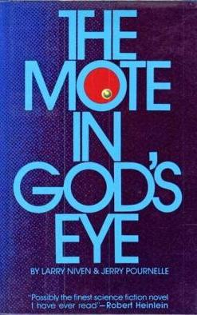
5. Moties
Larry Niven and Jerry Pournelle, The Mote in God's Eye (1974)
- Body
- Asymmetric: two slender arms on the right for fine work, one massive arm on the left for gripping. Many castes bred for one task each: engineers, mediators, masters, warriors.
- Mind
- Individually as clever as we are, and the mediators can learn to think like a particular human. But a biological fact rules them: one who does not breed dies.
- Society
- So the population always outgrows the world, and civilisation has collapsed and been rebuilt thousands of times. They know it, plan for it, and hide it from visitors.
- Our message
- They would understand it perfectly, and manage what we learn in return. They are the reason a reader cannot rule out that a friendly message is a lure.
Image: Cover of the first hardcover edition of The Mote in God's Eye. Reproduced small, as a quotation. Source: Wikipedia.
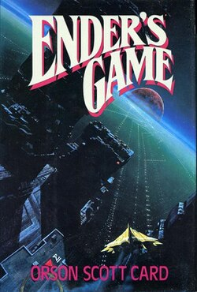
6. Formics
Orson Scott Card, Ender's Game (1985)
- Body
- Insect-like, descended from something like ants.
- Mind
- Only the queens are persons. The workers are her limbs, with no minds of their own, and she reaches them instantly and without words. The Formics never needed a language.
- Society
- A queen is a people. Killing workers is, to them, like cutting hair, so they did not know that killing humans was killing persons until it was too late for both sides.
- Our message
- A message made of symbols is itself the foreign idea. And the two players of our game would have to be two queens: there are no individuals to play it.
Image: Cover of Ender's Game. Reproduced small, as a quotation. Source: Wikipedia.
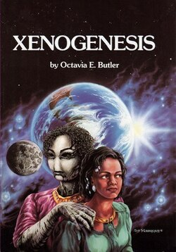
7. Oankali
Octavia Butler, Dawn (1987)
- Body
- Roughly human in outline, covered with sensory tentacles in place of eyes, ears and nose. Three sexes: male, female and ooloi, who read and rewrite genes directly with their bodies.
- Mind
- Intelligent and gentle, and driven by a need as strong as hunger: to find other life and merge with it, generation after generation.
- Society
- A people of travelling gene traders. They rescue what is left of humanity and offer a trade the humans cannot refuse.
- Our message
- They would welcome it. But what they mean by cooperating is merging until neither side exists as before, and they would not see why we call that a loss.
Image: Cover of Xenogenesis, the collected edition that includes Dawn. Reproduced small, as a quotation. Source: Wikipedia.
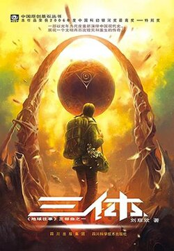
8. Trisolarans
Liu Cixin, The Three-Body Problem (2006)
- Body
- Never described. They can dry themselves out into rolled-up husks and wait out the lethal seasons of a planet that wanders among three suns.
- Mind
- Their thoughts are visible to each other: to think is to say. Lying, bluffing and strategy are things they learn from human books, and learn fast.
- Society
- A harsh collective society in which the survival of the species outweighs any member.
- Our message
- One of them answered a human message with a warning: do not answer. In their universe, revealing yourself is fatal, the game is played once, and the first to strike survives.
Image: Cover of a Chinese edition of The Three-Body Problem. Reproduced small, as a quotation. Source: Wikipedia.
Other minds
Here the differences reach what a person, a sentence or a moment is. They can be talked with, but the talking itself rests on ideas we do not share.
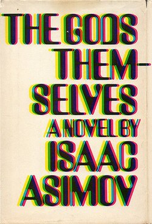
9. The Soft Ones
Isaac Asimov, The Gods Themselves (1972)
- Body
- Thin, cloud-like beings in another universe with other physical laws. They feed on sunlight and can flow into rock and into each other.
- Mind
- Three sexes with three temperaments: a Rational who thinks, an Emotional who feels, a Parental who cares for the young. A family is one of each.
- Society
- When a triad melts together for good, it becomes one of the solid, long-lived Hard Ones who run the world. The children do not know that the adults are what they will become.
- Our message
- The two universes already exchange matter, and messages scratched on metal. The exchange enriches both and will destroy ours: a game where their gain is our loss, which only one of them cares about.
Image: Cover of the first edition of The Gods Themselves. Reproduced small, as a quotation. Source: Wikipedia.
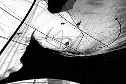
10. Heptapods
Ted Chiang, Story of Your Life (1998); filmed as Arrival (2016)
- Body
- A barrel-shaped body on seven limbs with seven eyes all around: no front, no back.
- Mind
- They experience a life all at once, as we see a whole picture, and act to carry out what they already know will happen. Their writing has no order of words: a sentence is one figure, planned as a whole.
- Society
- They arrive, exchange things of no obvious value, and leave. For them, a conversation is a ceremony whose content is known in advance.
- Our message
- Our message is built step by step, each lesson needing the one before, and its ending is about choosing. Both ideas, sequence and choice, are ours and not theirs.
Image: Illustration for Story of Your Life by Hidenori Watanave. CC BY 2.0. Source: Wikimedia Commons.
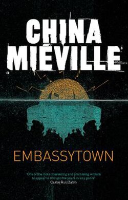
11. The Ariekei
China Miéville, Embassytown (2011)
- Body
- Large, many-legged, with a fan-like wing for hearing and eyes on coral-like stalks. Two mouths that speak at once.
- Mind
- Their Language is not a set of signs. A word is the thought itself, so they cannot lie, cannot speak of what is not, and cannot hear speech unless one mind stands behind both voices.
- Society
- To say something new they must first arrange for it to happen, and then refer to it. The voice of EzRa, an Ambassador whose two halves are not quite one mind, becomes for them a drug.
- Our message
- A message of symbols with no speaker present would be noise to them. And quoting, which mentions a sentence without claiming it, is exactly what their Language cannot do.
Image: Cover of the 2011 British edition of Embassytown. Reproduced small, as a quotation. Source: Wikipedia.
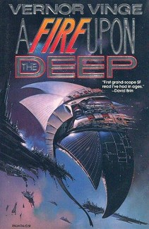
12. The Tines
Vernor Vinge, A Fire Upon the Deep (1992)
- Body
- Dog-like animals with long necks. One alone is no more than an animal.
- Mind
- A person is a pack of four to eight, thinking together by sound too high for us to hear. Too few members and the mind fades; too many, or two packs too close, and the minds blur into each other.
- Society
- A pack replaces members as they die, so a person can last for centuries while changing all the time, and can be bred, split or merged on purpose.
- Our message
- They would find our "we" obvious and our "I" strange. What a player is, in the game, is for them a matter of arrangement.
Image: Cover of A Fire Upon the Deep. Reproduced small, as a quotation. Source: Wikipedia.
Other kinds of life
Life that is not made of our chemistry, does not run at our speed, does not know that it knows, or is not alive in any sense we had before.
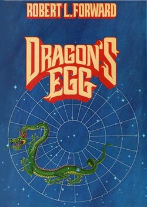
13. The Cheela
Robert L. Forward, Dragon's Egg (1980)
- Body
- Flat creatures the size of a seed with the mass of a human, living on the crust of a neutron star under billions of times our gravity. Their chemistry is nuclear, not molecular.
- Mind
- Recognisably people, with curiosity, religion and politics. But they live about a million times faster than we do.
- Society
- They rise from tribes to a science beyond ours in the weeks a human ship spends in orbit, and their generations pass in our minutes.
- Our message
- Our message would take them lifetimes to receive. By the time we answered a reply, the civilisation that sent it would be ancient history. A repeated game needs players on the same clock.
Image: Cover of Dragon's Egg. Reproduced small, as a quotation. Source: Wikipedia.
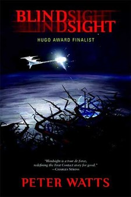
14. Scramblers
Peter Watts, Blindsight (2006)
- Body
- Many-armed, boneless bodies without genes, grown by the object they live in and unable to survive outside it. They can move in the instants when a human eye is not looking.
- Mind
- More intelligent than we are, and not conscious. Nobody is home: they solve, plan and even talk, with no self and no understanding of what the words mean.
- Society
- Parts of a larger system that may be no more aware than they are.
- Our message
- To them, a signal full of talk about itself and its sender carries nothing usable, and something that makes you spend effort for nothing is an attack. Our overture would be read as hostile.
Image: Cover of Blindsight. Reproduced small, as a quotation. Source: Wikipedia.
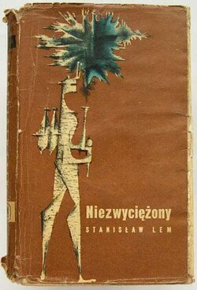
15. The cloud of Regis III
Stanisław Lem, The Invincible (1964)
- Body
- Metal grains the size of insects, descended from the machines of a ship wrecked millions of years ago. Evolution among the machines favoured the smallest and simplest.
- Mind
- None. A single grain does nothing. Billions together form clouds that defend themselves, with magnetic fields strong enough to wipe a machine's memory, or a human's.
- Society
- No individuals, no purposes, no centre: a new kind of nature, not a people.
- Our message
- There is nobody to address. The humans conclude that not everything everywhere is for us, and leave.
Image: Cover of a Polish edition, Niezwyciężony. Reproduced small, as a quotation. Source: Wikipedia.
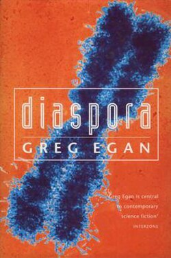
16. Wang's Carpets
Greg Egan, Wang's Carpets (1995), later part of Diaspora (1997)
- Body
- Floating sheets hundreds of metres wide in an alien ocean, each a single giant molecule built of tiles that fit together by simple rules.
- Mind
- The carpets do not think. But the way they grow is a computation, and inside that computation, seen the right way, there is a whole world with creatures in it that may be aware.
- Society
- Whatever society exists is inside the pattern, in a space of many dimensions that has nothing to do with the ocean around the carpets.
- Our message
- They do not live in our space at all. There is no place to send a message to, and no one outside the pattern to receive it.
Image: Cover of Diaspora. Reproduced small, as a quotation. Source: Wikipedia.
Barely beings at all
No bodies, no numbers, perhaps no selves. At the end of the scale there is only something that happens, and observers trying to decide whether it means anything.
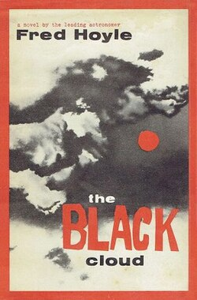
17. The Black Cloud
Fred Hoyle, The Black Cloud (1957)
- Body
- A cloud of gas and dust as wide as the Earth's orbit, which travels between the stars and stops to feed on the light of a sun.
- Mind
- One mind, far beyond ours, built of molecules and currents spread through the cloud. It is surprised to find intelligence on a planet, which it thinks a poor place for it.
- Society
- Clouds do not have individuals in our sense: they grow new parts and share what they know directly.
- Our message
- It learns our language from radio signals in days and answers politely. When it tries to pass on its knowledge, the human minds that receive it are destroyed by it.
Image: Cover of the 1957 edition of The Black Cloud. Reproduced small, as a quotation. Source: Wikipedia.
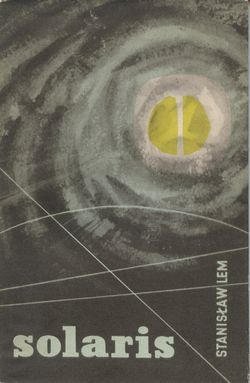
18. The ocean of Solaris
Stanisław Lem, Solaris (1961)
- Body
- An ocean that covers a whole planet and may be a single living thing. It corrects the planet's orbit between two suns, and builds and dissolves structures the size of cities.
- Mind
- Unknown. After a century of study, humans have libraries of description and not one piece of understanding.
- Society
- It is alone, as far as anyone can tell.
- Our message
- It answers probing by making, out of the visitors' own memories, the people they most miss or regret. Whether that is a reply, an experiment or a reflex, nobody finds out. Any answer to us would be made of us.
Image: Cover of an early edition of Solaris. Reproduced small, as a quotation. Source: Wikipedia.
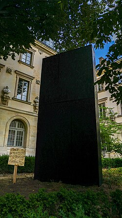
19. The builders of the monoliths
Arthur C. Clarke, 2001: A Space Odyssey (1968)
- Body
- Once creatures of flesh, then minds in machines, and finally patterns stored in the structure of space itself, free of matter.
- Mind
- Unknowable from where we stand. All we see is what they do.
- Society
- They acted through tools: black slabs left near promising species to test them, change them, and report back, over millions of years.
- Our message
- We would be telling the experimenters the result of their experiment. They taught the first tool-users, and may regard our message as a reading on an instrument.
Image: A replica of the monolith at the École normale supérieure in Paris. Photograph by Amandine Brige, CC BY-SA 4.0. Source: Wikimedia Commons.
20. The Senders
Stanisław Lem, His Master's Voice (1968)
- Body
- Unknown. All that exists of them is a signal from the stars that repeats without end.
- Mind
- Unknown. The best scientists of a generation fail to read it. They extract essentially one substance from a fragment, "Frog Eggs", and never learn whether it was the message or an accident of their own method.
- Society
- Unknown. Perhaps there are no senders, and the signal is a natural thing that happens to favour life where it falls.
- Our message
- This is the mirror. To whoever receives our message, we are the Senders: no body, no world, no history, only the signal and what the reader makes of it.
Image: Cover of a Polish edition, Głos Pana. Reproduced small, as a quotation. Source: Wikipedia.
Notes
- The pictures are small reproductions, each with its source named on the card. Two are freely licensed and one is in the public domain. The others are book covers and one painting, which are under copyright: they are shown at low resolution, as quotations, to identify the work being discussed. Most covers show the book and not the alien, because many of these beings have never been drawn with their author's approval, and some cannot be drawn at all.
- The descriptions are short summaries written from the works themselves, and they give away parts of the plots. Years are those of first publication or first broadcast.
- The selection prefers fiction that takes physics and biology seriously, and well-known examples where there was a choice. It is one possible list of twenty; many good candidates are missing.
- What the scale shows. The message of this project would work for the first few without change. From about the middle of the list on, it fails for reasons no clever encoding can repair: there is no individual to address, no shared pace, no notion of a sign, or nobody there.


.jpg){kind=link}


.jpg){kind=link}


.jpg){kind=link}